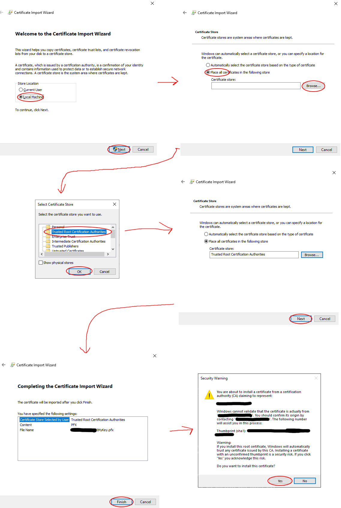
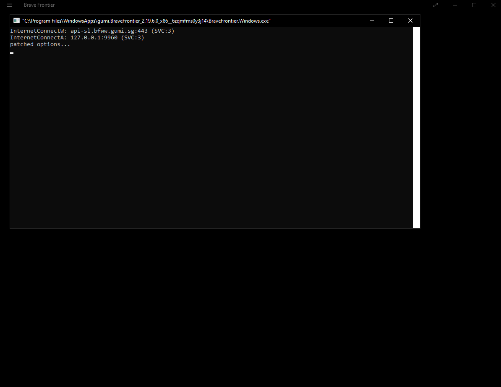
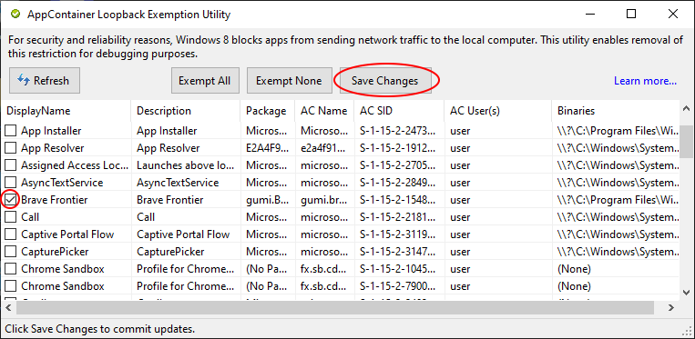

Setting Up a Development Game Client (Windows 8.1+)¶
Requirements¶
Visual Studio or Visual Studio Build Tools installed on your system
A copy of the Brave Frontier package (APPX) for Windows (Share Drive link)
Developer Mode enabled on your system
Warning
If Developer Mode is not installed or enabled in Windows, the proxy will not function, and you will not see the command prompt.
Cloning the Repository¶
To clone the server repository, run the following command:
git clone --depth=1 https://github.com/decompfrontier/server
Building the Proxy¶
Warning
The client only supports 32-bit platforms. Ensure you use the MINGW32 (i686-w64-mingw32) toolchain.
Using CMake, configure the proxy with one of the following options:
For Visual Studio as your compiler:
cmake --preset debug-vsFor MSYS/MinGW as your compiler:
cmake --preset debug-mingw
After compilation, navigate to your CMake build directory. Inside the bin folder, you should find a libcurl.dll file. Keep track of this file, as it will be required later in the tutorial.
Generating UWP Development Certificates¶
Warning
It is recommended to remove these certificates when they are no longer needed to prevent them from compromising system trust.
Important
All commands in this section must be executed in PowerShell. Ensure you are using PowerShell, or the system will not recognize the required applications.
Note
If you have previously generated a PFX certificate for deploying applications to the Windows Store or have already completed this section, skip ahead to the “Modifying Brave Frontier APPX” section.
Hint
This section provides a simplified process adapted from this MSDN page.
To install custom Windows Store apps, you must first generate a development certificate. Run the following command in PowerShell to create a certificate:
New-SelfSignedCertificate -Type Custom -Subject "CN=<Name>" -KeyUsage DigitalSignature -FriendlyName "Your friendly name goes here" -CertStoreLocation "Cert:\CurrentUser\My" -TextExtension @("2.5.29.37={text}1.3.6.1.5.5.7.3.3", "2.5.29.19={text}")
Note
Replace <Name> with a name of your choice (e.g., “My BraveFrontier”). Write down this name, as it will be needed later.
Take note of the certificate’s Thumbprint, as it will be used to export the certificate. Then, run the following commands to export it:
$password = ConvertTo-SecureString -String "<Your Password>" -Force -AsPlainText
Export-PfxCertificate -cert "Cert:\CurrentUser\My\<Certificate Thumbprint>" -FilePath MyKey.pfx -Password $password
Note
Replace
<Your Password>with a strong password of your choosing.Replace
<Certificate Thumbprint>with the Thumbprint from the previous step.
You should now have a MyKey.pfx file. Keep this file safe, as it will be used to sign the modified Brave Frontier client.
Installing the Certificate¶
Open the
MyKey.pfxfile to launch the Certificate Import Wizard.Select
Local Machineand proceed.When prompted for the certificate store, choose
Place all certificates in the following store.Browse and select
Trusted Root Certification Authorities.Click
Finish, then confirm withYeswhen prompted.

Modifying Brave Frontier APPX¶
Important
All commands in this section must be executed in a Developer Command Prompt for Visual Studio. Ensure you use this environment, or the required tools will not be recognized.
To unpack the game client, run the following command:
makeappx unpack /p gumi.BraveFrontier_2.19.6.0_x86__tdae4wqex79w6.appx /d BraveFrontierAppxClient
A new folder named BraveFrontierAppxClient will be created, containing the extracted game client files for modification.
Copy the
libcurl.dllfile from the “Building the Proxy” section and place it in the root of theBraveFrontierAppxClientdirectory. When prompted to replace the original file, selectYes.Delete the following files from the
BraveFrontierAppxClientdirectory:AppxMetadataAppxSignature.p7xAppxBlockMap.xmlApplicationInsights.config
Open
AppxManifest.xmlin a text editor (e.g., Notepad++) and locate this line:<Identity Name="gumi.BraveFrontier" Publisher="CN=5AA816A3-ED94-4AA2-A2B4-3ADDA1FABFB6" Version="2.19.6.0" ProcessorArchitecture="x86" />Replace
CN=5AA816A3-ED94-4AA2-A2B4-3ADDA1FABFB6withCN=<Name>, where<Name>matches the name used during certificate generation (e.g., “My BraveFrontier”). This ensures the application installs correctly.(Optional) Modify the
Propertiestag to customize the app’s display details, such as:<Properties> <DisplayName>Brave Frontier</DisplayName> <PublisherDisplayName>株式会社gumi</PublisherDisplayName> <Logo>Assets\StoreLogo.png</Logo> </Properties>(Optional) To change the app’s name in the Windows Start menu, edit this tag:
<m2:VisualElements DisplayName="Brave Frontier"Save and close the file.
Next, pack and sign the modified client with these commands:
makeappx pack /d BraveFrontierAppxClient /p BraveFrontierPatched.appx
SignTool sign /a /v /fd SHA256 /f MyKey.pfx /p "<Your Password>" BraveFrontierPatched.appx
Note
Replace <Your Password> with the password used when exporting the certificate.
Running the Game¶
Install the newly generated BraveFrontierPatched.appx file and launch the client. If all steps were followed correctly, a console window should appear alongside the game client, as shown below:

Warning
If no console appears, check the following:
Ensure the patched
libcurl.dllwas correctly installed.Verify you did not use the
deploypreset, as it is not supported in this build.Confirm Developer Mode is enabled on your Windows PC.
Connecting to the Server¶
Due to a default limitation in UWP apps, they cannot communicate with localhost, preventing the game from connecting to the server. To resolve this:
Download the Enable Loopback Utility.
Run the utility and select the Brave Frontier application.
Configure it as shown below, then click
Save Changesand restart the game:

If the game server is running, you should now see the Brave Frontier login screen upon launching the game.